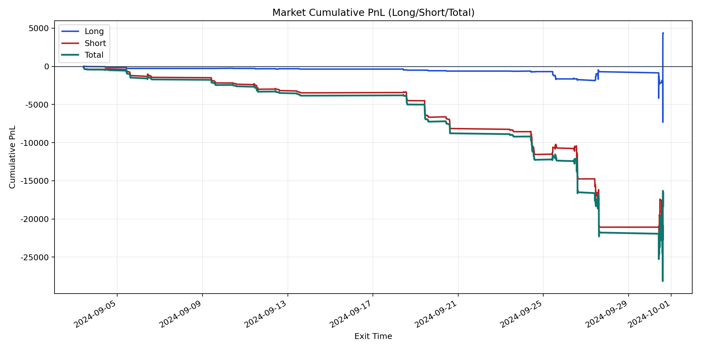
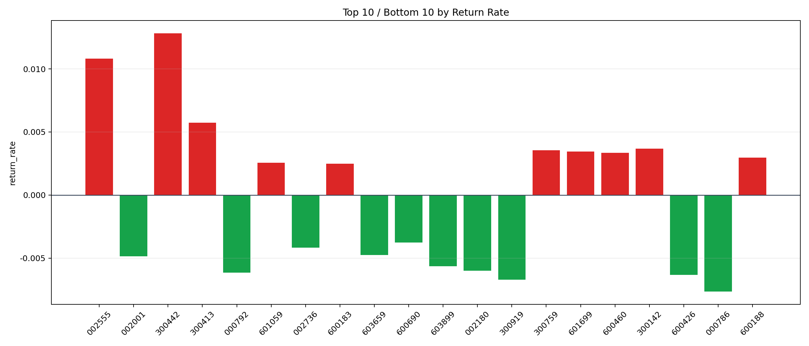

| repo_root | /home/haoranyou/data/output/alpha0.4_1w_5s_3ticks_index_filter/index_weights_300 |
|---|---|
| period_months | 1 |
| period_label | 2024-09-03_to_2024-09-30 |
| start_time | 2024-09-03 10:06:12 |
| end_time | 2024-09-30 15:00:00 |
| n_trades | 2496 |
| n_symbols | 69 |
| total_pnl | -18331.911649999973 |
| long_total_pnl | 4359.855150000004 |
| short_total_pnl | -22691.76679999998 |
| total_entry_notional | 23282919.0 |
| long_entry_notional | 4889706.0 |
| short_entry_notional | 18393213.0 |
| total_return_rate | -0.0007873545258650762 |
| long_return_rate | 0.0008916395280207039 |
| short_return_rate | -0.0012337032578266765 |
| top_symbols_by_return | ["300442", "002555", "300413", "300142", "300759", "601699", "600460", "600188", "601059", "600183"] |
| bottom_symbols_by_return | ["000786", "300919", "600426", "000792", "002180", "603899", "002001", "603659", "002736", "600690"] |

